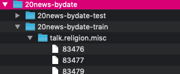

面向程序员的数据挖掘指南 - 6 朴素贝叶斯算法和非结构化文本¶
结构化数据是指数据集中的每条数据（上表中的一行）由多个特征进行描述。例如前面章节涉及的比马印第安人糖尿病数据集。
非结构化数据指的是诸如电子邮件文本、推特信息、博客、新闻等。这些数据至少第一眼看起来是无法用一张表格来展现的。
自动判别文本中的感情色彩¶
假设我们要构建一个自动判别文本感情色彩的系统，它有什么作用呢？比如说有家公司是售卖健康检测设备的，他们想要知道人们对这款产品的反响如何。他们投放了很多广告，顾客是喜欢(我好想买一台)还是讨厌(看起来很糟糕)呢？
假设我要从文本中区分顾客对某些食品的喜好，可能就会列出一些表达喜欢的词语，以及表达厌恶的词：
- 表达喜欢的词：美味、好吃、不错、喜欢、可口
- 表达厌恶的词：糟糕、难吃、不好、讨厌、恶心
我们的训练集是一组文本，又称为语料库。每个文本(即每条记录)是一条推文，并被标记为喜欢和讨厌两类。
首先，我们统计所有文本中一共出现了多少个不同的单词，记作“|Vocabulary|”（总词汇表）。
对于每个单词w_k ，我们将计算P(w_k|h_i)，每个h_i(喜欢和讨厌两种)的计算步骤如下：
- 将该分类下的所有文章合并到一起；
- 统计每个分类中单词数量，记为n_i；
- 对于总词汇表中的单词w_k，统计他们在本类文章中出现的次数n_k
- 最后计算概率：P(w_k|h_i)=\large \frac{n_k+1}{n_i+|\text{Vocabulary}|}
分类阶段比较简单，直接应用贝叶斯公式就可以了。
比如下面这句话，要如何判断它是正面还是负面的呢？“I am stunned by the hype over gravity.” 我们需要计算的是下面两个概率，并选取较高的结果：
P(like)×P(I|like)×P(am|like)×P(stunned|like)×... P(dislike)×P(I|dislike)×P(am|dislike)×P(stunned|dislike)×...
Application: 20 Newsgroups¶
20newsgroups数据集是用于文本分类、文本挖据和信息检索研究的国际标准数据集之一。数据集收集了大约20,000左右的新闻组文档，分为20个不同主题的新闻组集合。

下载下来后，文档格式如下：

停用词¶
停用词指的是那些没有意义的、组成语法结构的单词，它们产生会很多噪音。这些单词一般并不会对分类结果产生大的影响。有专门的停用词表可供使用。
去除停用词的好处：
- 能够减少需要处理的数据量；
- 这些词的存在会对分类效果产生负面影响。
常用词和停词¶
虽然像the、a这种单词的确没有意义，但有些常用词如work、write、school等在某些场合下还是有作用的，如果将他们也列进停词表里可能会有问题。
Python代码¶
分类器的初始化代码要完成以下工作：
- 读取停词列表；
- 获取训练集中各目录（分类）的名称；
- 对于各个分类，调用train方法，统计单词出现的次数；
- 计算各个单词出现的概率
class BayesText: def __init__(self, trainingdir, stopwordlist): """ This class implements a naive Bayes approach to text classification. :param trainingdir, is the training data. Each subdirectory of trainingdir is titled with the name of the classification category -- those subdirectories in turn contain the text files for that category. :param stopwordlist, is a list of words (one per line) will be removed before any counting takes place. """ self.vocabulary = {} self.prob = {} self.totals = {} self.stopwords = {} f = codecs.open(stopwordlist, mode='r', encoding="utf-8") for line in f: self.stopwords[line.strip()] = 1 f.close() categories = os.listdir(trainingdir) # filter out files that are not directories self.categories = [filename for filename in categories if os.path.isdir(trainingdir + filename)] print("Counting ...") for category in self.categories: print(' ' + category) (self.prob[category], self.totals[category]) = self.train(trainingdir, category) # I am going to eliminate any word in the vocabulary # that doesn't occur at least 3 times toDelete = [] for word in self.vocabulary: if self.vocabulary[word] < 3: # mark word for deletion # can't delete now because you can't delete # from a list you are currently iterating over toDelete.append(word) # now delete for word in toDelete: del self.vocabulary[word] # now compute probabilities vocabLength = len(self.vocabulary) print("Computing probabilities:") for category in self.categories: print(' ' + category) denominator = self.totals[category] + vocabLength for word in self.vocabulary: if word in self.prob[category]: count = self.prob[category][word] else: count = 1 self.prob[category][word] = (float(count + 1) / denominator) print("DONE TRAINING\n\n") def train(self, trainingdir, category): """ counts word occurrences for a particular category """ currentdir = trainingdir + category files = os.listdir(currentdir) counts = {} total = 0 for file in files: f = codecs.open(currentdir + '/' + file, 'r', 'iso8859-1') for line in f: tokens = line.split() for token in tokens: # get rid of punctuation and lowercase token token = token.strip('\'".,?:-') token = token.lower() if token != '' and not token in self.stopwords: self.vocabulary.setdefault(token, 0) self.vocabulary[token] += 1 counts.setdefault(token, 0) counts[token] += 1 total += 1 f.close() return (counts, total) def classify(self, filename): """ classify files :param filename: a file :return: classification result """ results = {} for category in self.categories: results[category] = 0 f = codecs.open(filename, 'r', 'iso8859-1') for line in f: tokens = line.split() for token in tokens: # print(token) token = token.strip('\'".,?:-').lower() if token in self.vocabulary: for category in self.categories: if self.prob[category][token] == 0: print("%s %s" % (category, token)) results[category] += math.log( self.prob[category][token]) f.close() results = list(results.items()) results.sort(key=lambda tuple: tuple[1], reverse=True) # for debugging I can change this to give me the entire list return results[0][0] def testCategory(self, directory, category): """ test all files for the category in this directory :param directory: a directory containing category :param category: a categeory folder contains files """ files = os.listdir(directory) total = 0 correct = 0 for file in files: total += 1 result = self.classify(directory + file) if result == category: correct += 1 return (correct, total) def test(self, testdir): """ Test all files in the test directory--that directory is organized into subdirectories--each subdir is a classification category :param testdir: test directory """ categories = os.listdir(testdir) # filter out files that are not directories categories = [filename for filename in categories if os.path.isdir(testdir + filename)] correct = 0 total = 0 for category in categories: print(".", end="") (catCorrect, catTotal) = self.testCategory( testdir + category + '/', category) correct += catCorrect total += catTotal print("\n\nAccuracy is %f%% (%i test instances)" % ((float(correct) / total) * 100, total))
朴素贝叶斯与情感分析¶
情感分析的目的是判断作者的态度或意见。情感分析的例子之一是判断一篇评论是正面的还是反面的，我们可以用朴素贝叶斯算法来实现。
Pang&Lee 2004的电影评价数据集包含1000个正面和1000个负面的评价。